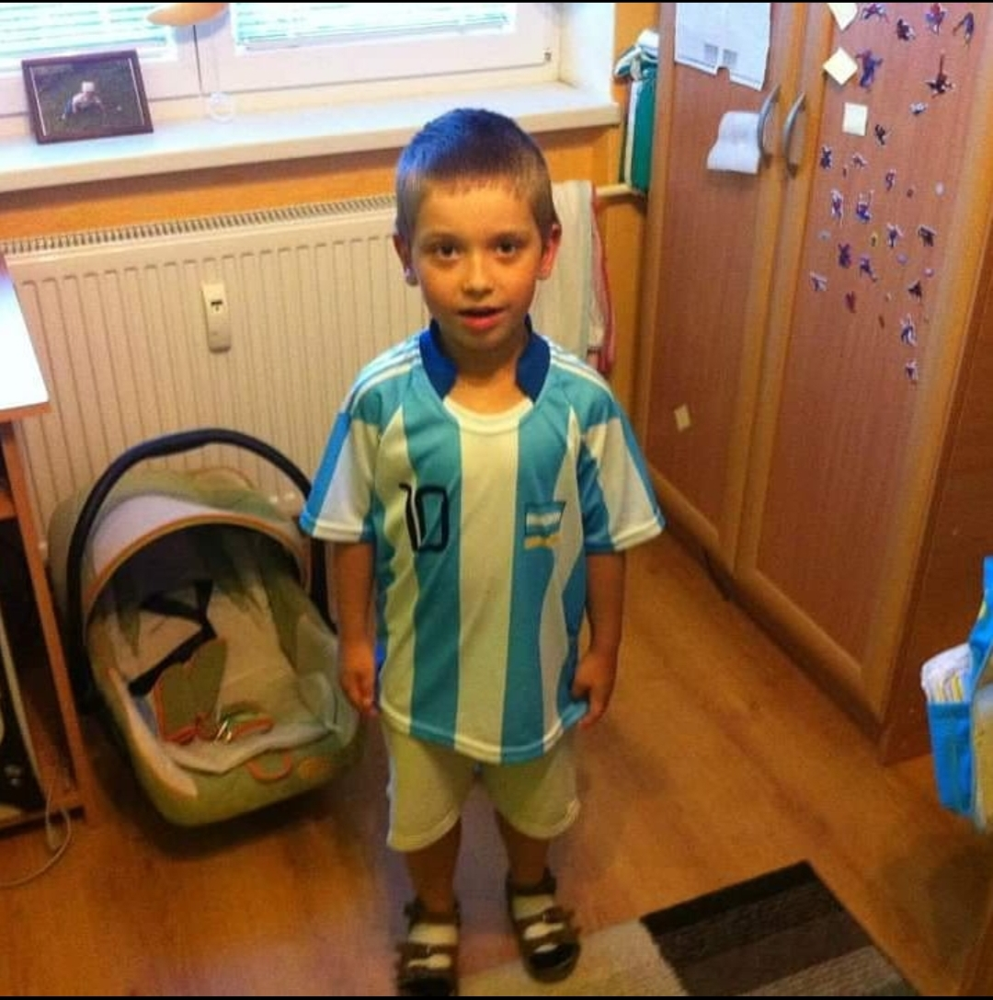
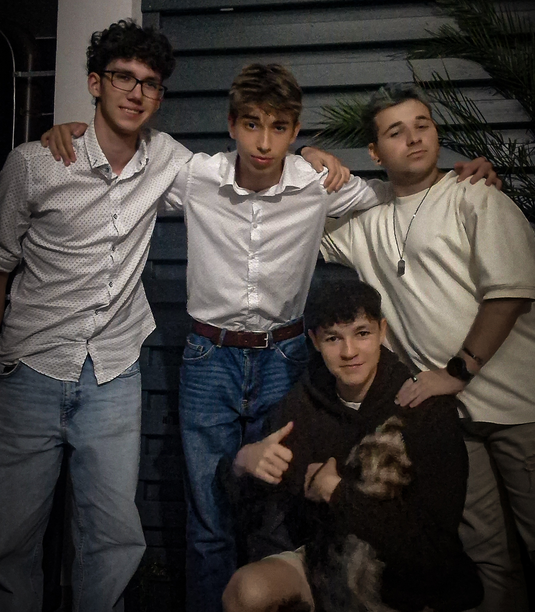

Ahojte čaute moje meno je Juraj Šupolík takzvane aj ryba
Moji kamaráti tvrdia že mám veľké oči. No neviem posúdte sami
 |
 |
Narodil som sa v Martinskej nemocnici 7.8.2006 kvôli ťažkému pôrodu no nikdy som tam nebýval. Prvé 2 roky života som býval na Skalitom a neskôr v Čadci kde bývam doteraz. Mám 2 mladšie sestry Zuzanu a Veroniku.Do škôlky som chodil na Fraňa kráľa, na základnú školu Rázusovú taktiež v Čadci a momentálne pôsobím na strednej škole informačných technológií v KNM. Myslím že v škôlke aj škole som zapadol veľmi dobre a vždy som si našiel kamarátov. Vo voľnočasových aktivitách rád chodievam von s kamarátmi samozrejme a od 1. ročníka základnej školy hrávam futbal za miestny klub FK Čadca a v neposlednom rade veľmi rád spím.
Futbal hrávam od prvého ročníka základnej školy. Hrám za miestny klub FK Čadca. Môj najobľúbenejší hráč je Lionel Messi a môj najobľúbenejší klub je FC Barcelona . Messiho milujem už od malička a som z neho hotový aj doteraz :D.Je to najlepší hráč všetkých čias.

.jpg)
Úprimne nájsť s nájdením si kamarátov som nikdy nejký extra problém nemal. Už od škôlky mám niektrých kamarátov, s ktorými sa bavím dodnes. Na základnej škole takisto a na strednej sú tiež všetci super a je s nimi sranda. No posledné roky si najviac rozumiem s tymíto troma bláznami: Kristián aliasKeks,SeboaSamo. Trávim s nimi viac času ako s rodinou preto ich tiež pokladám za rodinu.
| Sezóna | Góly |
| 2005 | 3 |
| 2006 | 12 |
| 2007 | 31 |
| 2008 | 22 |
| 2009 | 41 |
| 2010 | 60 |
| 2011 | 59 |
| 2012 | 91 |
| 2013 | 45 |
| 2014 | 58 |
| 2015 | 52 |
| 2016 | 59 |
| 2017 | 54 |
| 2018 | 51 |
| 2019 | 50 |
| 2020 | 27 |
| 2021 | 43 |
| 2022 | 35 |
{kind=link}